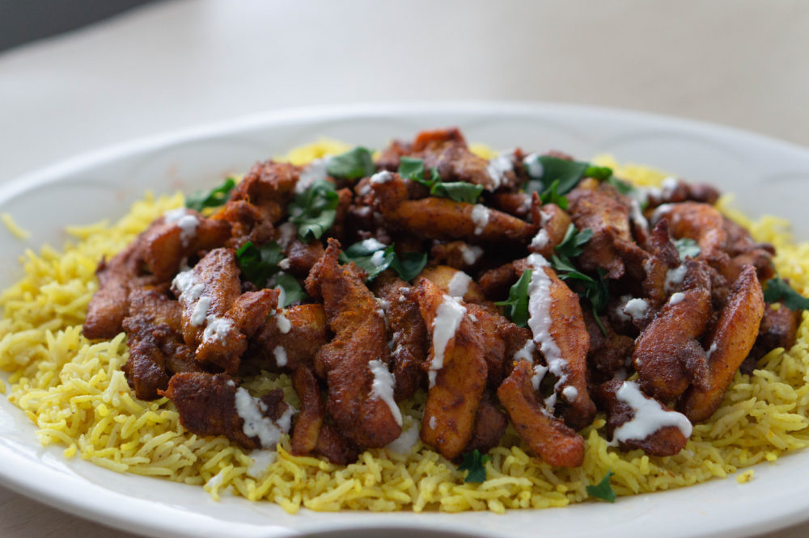

Chicken Shawarma

Ingredients
Chicken Marinade:
- 2 lb chicken thigh fillets
- 1 large garlic clove
- 1 tbsp ground coriander
- 1 tbsp ground cumin
- 1 tbsp ground cardamon
- 1 tsp ground cayenne pepper
- 2 tsp smoked paprika
- 2 tsp salt
- Black pepper
- 2 tbsp lemon juice
- 3 tbsp olive oil
Yoghurt Sauce:
- 1 cup Greek yoghurt
- 1 clove garlic
- 1 tsp cumin
- Squeeze of lemon juice
- Salt and pepper
To Serve:
- 4 – 5 flatbreads (Lebanese or pita bread orhomemade soft flatbreads)
- Sliced lettuce (cos or iceberg)
- Tomato slices
- Red onion, finely sliced
- Cheese, shredded (optional)
- Hot sauce of choice (optional)
Instructions
- Marinade chicken – Combine the marinade ingredients in a large ziplock bag. Add the chicken, seal, the massage from the outside with your hands to make sure each piece is coated. Marinate 24 hours (minimum 3 hours).
- Yogurt Sauce – Combine the Yogurt Sauce ingredients in a bowl and mix. Cover and put in the fridge until required (it will last for 3 days in the fridge).
- Preheat stove or BBQ – Heat a large non-stick skillet with 1 tablespoon over medium high heat, or lightly brush a BBQ hotplate/grills with oil and heat to medium high. (See notes for baking)
- Cook chicken – Place chicken in the skillet or on the grill and cook the first side for 4 to 5 minutes until nicely charred. Turn and cook the other side for 3 to 4 minutes (the 2nd side takes less time).
- Rest – Remove chicken from the grill and cover loosely with foil. Set aside to rest for 5 minutes.
To Serve:
- Slice chicken and pile onto platter alongside flatbreads, Salad and the Yoghurt Sauce.
- To make a wrap, get a piece of flatbread and smear with Yoghurt Sauce. Top with a bit of lettuce and tomato and Chicken Shawarma. Roll up and enjoy!
Mediterranean Yellow Rice
Ingredients
- 2 Tbsp oil olive or avocado
- ½ sweet onion, finely diced
- 3 cloves garlic, crushed
- ¾ tsp turmeric
- ¼ tsp cumin
- ¼ tsp paprika
- 1 ¼ tsp salt to taste
- 1 ½ cups basmati rice, rinsed and drained
- 2 ¼ cups water
- 2 Tbsp cilantro, finely chopped
- 2 Tbsp parsley flat-leaf, finely chopped
- ¼ cup pine nuts, toasted
Instructions
- Add oil and diced onion to a medium-sized pot over medium heat. Saute for 2-3 minutes, or until onion becomes translucent. Add crushed garlic and continue sauteing for another minute.
- Mix in turmeric, cumin, paprika, and salt. Toast until fragrant. (About 1 minute.)
- Pour in water, scraping the bottom of the pot to release any bits that are stuck, and add in the rice. Give it a good stir, and bring the water to a boil.
- Once boiling, cover the pot with a lid and reduce heat to low. Simmer for 20 minutes, or until rice is tender and fluffy.
- Remove the pot from the heat and mix in chopped cilantro, parsley, and toasted pine nuts. Serve immediately with some Lamb Koftas and Tzatziki sauce and enjoy!